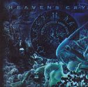

| Artist: | Heaven's Cry |
| Title: | Primal Power Addiction |
| Label: | DVS DVS007 |
| Length(s): | 51 minutes |
| Year(s) of release: | 2002 |
| Month of review: | [12/2002] |
| 1) | 2k Awe Tick | 4.45 |
| 2) | Masterdom's Profit | 4.00 |
| 3) | A New Paradigm | 3.42 |
| 4) | Divisions | 5.01 |
| 5) | A Higher Moral Ground | 3.30 |
| 6) | Komma | 5.07 |
| 7) | Remembrance | 4.45 |
| 8) | One Of Twentyfour | 5.35 |
| 9) | Waves | 4.35 |
| 10) | The Inner Stream Remains | 5.41 |
| 11) | Beds Are Burning | 4.24 |
Masterdom's Profit more clearly shows that this band leans towards Echolyn. Without reaching that band's level, this is a good track.
A New Paradigm is dominated by pretty hefty guitars, although the intermezzo sounds the exact opposite of that.
Divisions keeps the level up, reminding me a bit more of the sharpness of a Pain of Salvation. Once again good stuff, neatly followed by A Higher Moral Ground.
Komma is another strong one, working steadily towards a climax.
Remembrance starts a bit more gentle, but picks up as it moves along, although remaining ballad-like. Its follower One Of Twentyfour returns to the strength that was before.
Waves and The Inner Stream Remains close the album on a more gentle note.
Bonus track is a cover version of Midnight Oil's Beds Are Burning. Nice track, okay cover, but it doesn't quite fit the rest of the album.